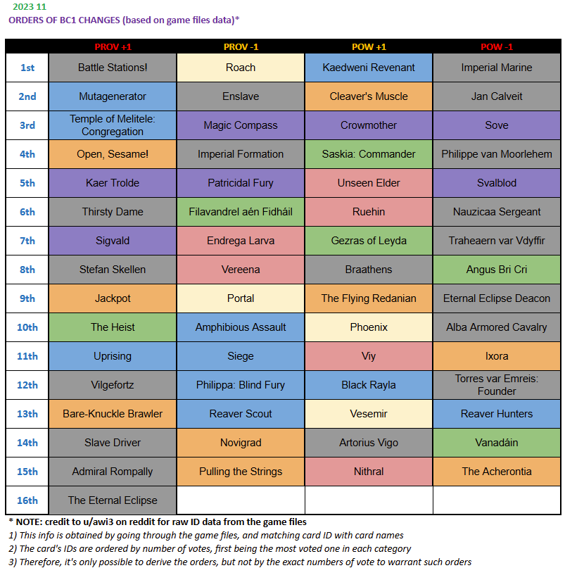

介绍
自2023年底起，CDProjekt Red 不再积极开发《巫师之昆特牌》。因此，不会发布任何新卡，现有卡牌也不会重制。然而，为了避免玩家陷入完全过时的终极版本，我们每月都会发布《昆特牌平衡委员会》（缩写：BC）。
BC 允许昆特牌社区通过民主投票来更改卡牌的威力和分配。每月共更改 40 张卡牌，10 张卡牌 +1 威力 / 10 张卡牌 -1 威力 / 10 张卡牌 +1 人口 / 10 张卡牌 -1 人口
一个纯粹的民主制度已经建立，我们可以逐月观察其演变和运作方式。
在本文中，我们将概述2023 年 10 月至 2025 年 4 月期间平衡委员会对昆特牌的影响，看看我们可以学到什么，平衡委员会的设计可以改进什么，以及与现实生活中的民主有哪些相似之处。
《昆特牌平衡委员会》的起源
昆特牌平衡委员会首次投票于2023年10月举行，并最终发布了11月补丁。当时使用的平衡委员会规则如下：
每个括号有15 个变化
资格：
至少声望 1（以阻止仅为平衡委员会创建新帐户）
达到职业排名或本赛季至少获得 25 场排名胜利

正如昆特牌玩家所见，buff 等级非常注重即时生效的改动，这在强力 buff 等级中尤为明显。话虽如此，这些有影响力的改动大多是“新玩意”，在昆特牌的天梯上几乎找不到。科德温亡魂、砍刀、鸦母、卢恩、飞翔的瑞达尼亚人或凤凰在当时都很少被使用，因此对它们进行大规模有效的强力 buff 似乎是合理的。
当时，平衡委员会中来自有影响力人士的建议的影响总体较低。因此，许多领袖技能的人口上限接近-1。这是一个简单的应对措施：当我们发现某个卡组太强，又不想深入研究哪些卡牌存在问题时，只需削弱领袖技能即可。
领袖的削弱也比卡牌的削弱更有针对性。你可以通过卡牌以多种方式削弱一个卡组，但领袖的削弱只有一种方式。
如果你看一下削弱范围，你会发现其中 50% 是灰色的。那是尼弗迦德 (NG) 派系——历史上玩得最多、最受喜爱和最受憎恨的派系。NG 的过度削弱是社区中的强烈情绪造成的，而不是平衡性考虑。当时 NG 状况良好，客观上应该受到一些削弱，但至少在两个案例中，憎恨的处理方式非常错误：维尔格弗特兹和阿尔巴骑兵在下一个补丁中被永久恢复。这两张卡都是控制类型，被视为“有趣的警察”（译注：整活卡组扼杀者）。另外两张卡的价值在强弱之间“摇摆不定”：奴隶贩子和纳乌西卡中士。后者至今每个月都会变化，，没有一个补丁缺席！
除了NG的过度削弱之外，第二件引人注目的事情就是掠夺者猎人的强度削弱。战力削弱2=>1之后，这张卡就完全没法用了。这一改动源于对猎龙人套牌的厌恶。幸运的是，猎人在下一个补丁中被恢复了，之后就不再受到这样的削弱了。
第一个平衡补丁是为了测试一下情况。根据结果，CDPR 的结论是，每个组别强制进行的更改太多，低票位更改的尾部存在问题，并且带来了太多混乱。在昆特牌大师赛 5 决赛之前发布的下一个平衡补丁，每个组别的更改限制为 5 个——以确保社区在最终告别之前不会做出任何不合理的改动。
至今仍遵循的每月昆特牌平衡理事会的最终形式如下（官方常见问题解答#2）：
每个括号有10 个变化
资格：
至少 声望 1 （以阻止仅为平衡委员会创建新帐户）
达到职业排名或 本赛季至少获得 50 场排名胜利
因此，CDPR 针对第一版 平衡委员会（BC） 做出了15 => 10 的每组改动，以及25 => 50 的胜场调整。这些改动带来了一些稳定性，也让游戏得以继续发展……
平衡委员会迄今做了什么？
让我们先来想象一下昆特牌平衡委员会召开前的卡牌/套牌强度。首先，我们根据强度将它们分成以下几类：
U = '未见于游戏中' = 由于威力不足、未被发现或缺乏良好协同作用而未使用的卡牌
T3 = 在现有牌组中可以使用的牌，但对于普通玩家来说并不是最好的选择。
T2 = 适合普通玩家攀爬天梯的成熟套牌
T1 = 在特定月份中晋升的最佳人选；平均产生最佳结果
现在让我们把这些群体放在战力轴上，从最弱到最强，包括每个群体的人口。
平衡委员会前
BC 之前的情况如下：
==========U=============== | ====T3====== | ===T2===| ==T1==
平衡指导委员会应该做的是通过增加T3和T2来降低U。主要有两种方法：
最弱优先 (WF) | 从最左边开始（最弱的卡牌）。这类卡牌会被移到 U 组内靠右的位置，经过几轮 buff 后才会加入 T3。
最弱牌最后（WL） | WF 本身没错，但速度太慢。最好从接近 T3 的U卡牌开始。这样可以让环境更快地变得更加多样化，同时最弱的卡牌也可以最后处理。
WF 和 WL 支持者之间的争论从未停止。大多数平衡联盟都更倾向于 WL，而非 WF。
第19次平衡委员会之后
============U============ | ======T3======= | ====T2=====| T1
T1 缩水了。最佳卡牌不如以前那么出色了——例如德玛维、斯瓦波罗和梅里泰莉被削弱了 4 处。
T2 的发展是以牺牲其他所有组别为代价的。环境更加多样化，可以使用更多卡组进行升级。
T3 的净增长是以 U 为代价的。这本应是 BC 正在进行的主要过程，但却没有那么快地发生。原因是什么？
削弱
到目前为止，我们只有一个想法：提升U卡。但要增强的和削弱的一样多。强度等级的中点可能在T3。将右侧的T3和T2强度拉低到这个点，应该能让U卡玩家更容易晋升到相对更高的层级。
但实际上……从《昆特牌》平衡委员会的总体经验中，我们可以得出一个重要的教训：人类心理很重要，必须加以预测和考量。让我们来看看可能出现的削弱：
1.T1 => T2高位 |可能被社区接受
2.T1=> T2 低位| 被削的T1卡组可能人气很高；大约80%的几率会回调至少一张卡
3.T1=> T3 | 他们毁了我的卡组！！！完全没法玩了！！！（在高玩手上仍然远高于 50% 的胜率，但所有卡组都应该有 50% 以上的胜率）100% 必须恢复
4.T2=> T3 | 为什么不削弱T1？（因为如果T1有 2 套牌，如果它们被砍 10 刀，那就看看T3吧。不过谁在乎呢？）T2还有几十套，为什么削这套牌？这套牌有问题吗？100% 恢复
我们看到，存在着巨大的心理障碍，也就是人为因素，阻碍了向左移动（Nerf Barrier，NB）。为了公平起见，这里必须补充一点，并非所有卡牌都能轻易被削弱，尤其是铜卡，它们通常处于未使用和强势状态之间。
削弱心里屏障/障碍(Nerf Barrier，缩写：NB，即人为因素阻碍卡牌平衡向中位数移动)是主要原因，但不是唯一原因，导致 BC 中迄今为止所做的 761 项更改中有 218 项更改相互抵消（~30%）。
NB 的存在并不是为了“理智”或者换句话说“仇恨”的削弱。这些削弱并非基于平衡性考虑，而是基于游戏体验。卫士人口的削弱，或者帝国呓语/爆牌的削弱就是很好的例子。需要注意的是，大多数这类削弱都很容易持续下去。问题不在于人们是否讨厌这些卡牌，因为仇恨者的数量对于增强（回调）毫无意义。简单来说，它们不像伦芙芮Renfri或 约翰Jan Calveit那样重要和受欢迎，不足以从沉默的大多数中获得足够的支持。
显然，“仇恨”式的削弱并不能解决平衡问题，不应过度使用。我们不仅要忍受NB，更要将其纳入每一项真正的平衡策略中。
这里一个很好的例子就是关于占位符的讨论。占位符的作用是填充削弱位，以防止真正发生削弱。“显然我们不喜欢这个想法，它只是把T2向左移动了一步，对吧？简直是一派胡言。还有战力膨胀！因为增强比削弱多，所以战力膨胀是必然的！” （译注：模仿Reddit暴躁老哥说话）
不过，如果我们尊重NB规则呢？额外的削弱而不是使用占位符，确实会让我们在下一个补丁中排名靠前。但如果这次削弱过头，导致下个版本全面拔河回退怎么办？我们不仅浪费了一次削弱投票，还 间接地堵住了下届议会的一个增强槽。我们只能后悔当时没有选择占位符——从长远来看，这样可以少浪费一个槽位！
有时真正的削弱会更好，但有时占位符...关于使用领袖人口增益作为占位符，我们也进行了类似的讨论。
在这里，我认为没有任何理由将领袖人口与卡牌区别对待。增强“U”级领袖能力本身并没有错。考虑到NB的影响，增强t3领袖能力有时也意义重大。然而，增强t2/t1领袖能力是错误的，就像增强普通卡牌一样。在这里，错误增强的效果会加倍，因为恢复需要占用一个增强槽，同样根据NB效应，错误的改动在天梯里的反映也会加倍。
如果上面的解释对你来说已经足够了，那你根本没上过昆特牌的Reddit。显然我在这里犯了一个典型的错误（目光短浅，知识不足），因为用一个实际上的增强卡占用削弱位=21个增强 vs 19个削弱=打破宇宙对称性=战力膨胀=游戏整体膨胀。事实上，增强“U”级领袖造成的伤害不可估量！几乎相当于斯坦尼斯王子无票上车（叫警察！！！）。（译注：此处全文大写，模仿Reddit暴躁老哥）
历史上，有“好”和“坏”领导能力增强的例子，后者几乎完全是 T2 增强，来自“追逐影响力”（“impact hunting”），这将在下面讨论。
追逐高位
卡组T位越高，对环境的影响就越大。所有不能立即在T1/T2级高阶卡组之间切换的增强效果，都不会对天梯格局产生太大影响。
这里的大部分工作应该通过削弱顶级卡组来完成，但正如我们所见，NB扭曲了这个过程。因此，一些平衡联盟失去了耐心，甚至选择立即影响顶级环境作为常规策略。（译注：指海鸥组）。环境变化很有趣，但把一张卡从U级增强到T3，却仍然在主流中无人使用，就没意思了。
追高加强的做法显然与整体情况相悖。此外，以这种方式增强的卡牌自然会成为下个赛季削弱的焦点（译注：报复性削弱/露头杀）。这又一次导致了昆特牌BC历史上30%的平衡位浪费（译注：指拔河）。
在NB的现实情况中，选择一些更有影响力的增益是合理的，但必须确保 1）增益不会最终成为 T1，2）增益物品的真正威力还不是 T 2。
《昆特牌：平衡委员会》设计的成功与失败
成功
动态平衡 ——在昆特牌平衡委员会成立之初，社区成员或许担心“自私的平衡联盟”会通过投票，将他们喜欢的卡牌增强到T0级，将他们讨厌的卡牌削弱到U级。但这种情况并没有发生。即使在最引人注目的“追逐高位”之后，下一季中，那些他们感兴趣的卡牌也会被沉默的大多数人拔回去。这类撤销通常比任何联盟的建议都获得更多票数。这就是民主的主要作用——修复那些违背大多数人利益的改动。
更加多样化的版本——得益于平衡委员会的努力，更多卡牌、更多套牌和创意得以涌现。当然，由于NB效应，BC 之前的热门套牌仍然需要保持较高的版本环境（译注：BC前的卡组仍然需要保持强度），但它们也伴随着更多新的选择。
更多可玩卡牌——如果我们想要打破常规，那么我们可以使用比 BC 之前更多的可玩卡牌
减少二元性（译注：指不交互/纯气宗/纯控制） ——昆特牌平衡委员会目前为止在调整二元性卡牌/套牌方面做得很好，这些卡牌/套牌不利于天梯体验（例如卫士……）。游戏不仅变得更加平衡，而且在每场比赛中玩家的行动也更加丰富。
保持游戏活力——《昆特牌》仍然足够有趣，能够吸引新玩家，或者让像Pajabol或D神Demacration这样的老玩家回归。此外，平衡委员会的讨论也让玩家群体更加积极地参与到游戏的整体中。
失败
喜爱/憎恨者分离——喜爱者数量对增强有影响，憎恨者数量对削弱有影响。这些群体不会互相抵消——有些卡牌，比如娜乌西卡中士、奴隶贩子、伦芙芮或裂流领主，在同一时间可能比其他 99% 的卡牌拥有更多的喜爱者和憎恨者。因此，我们经常在原地打转，因为多次修改同一张卡牌而浪费了 30% 的选票。如果能让两个群体都参与到每次投票中，那就再好不过了，这样就能达成共识。我看到社区里有人建议将投票分为两个阶段。第一阶段，每个组别的前 20 张卡牌由大众投票决定。第二阶段，社区从已知卡牌池中投票 (+) 表示他们愿意接受的修改，(-) 表示愿意停止的修改。所有组别的前 10 名净结果就是最终结果。
上述做法一个可能的缺点是更差的“体液均衡”（译注：古希腊医学概念，类似身体内阴阳协调）。顺便说一句，我希望在波兰目前总统选举中看到类似的做法。与其只给每个总统候选人打x，不如给每个候选人都设置 (-/=/+) 选项？我们只能根据目前及其有限的信息来调整我们的选票，这些只有✓和x的选票失去了太多信息。而且，我们无法以可衡量的方式告诉政客我们有多喜欢他们 🙁
削弱障碍（NB）——正如“削弱”部分所讨论的，实际上削弱比增强更麻烦。因为无争议的增强远多于无争议的削弱，所以如果能够相互调整增强/削弱的数量会更好。遗憾的是，在设计层面，程序员只留下了“每个栏位的改变槽位”，而不是单独的槽位。例如，如果增强与削弱的比例是 15 比 5，我们现在就会减少很多的票数浪费，“U”部分也会更小。当然，从长远来看，当平衡达到均衡时，10 比 10 更好，这样游戏就不会战力无止境膨胀。但我们距离这种状态还非常非常远，很可能在《昆特牌：无限》的生命周期内都无法达到。
主要的教训是：尽可能保住更多的t位，即使你现在看不到它们有什么用处。与现实世界民主的类比也很有力。大型利益集团必须保住特权，否则就会暴乱。民主政府将确保这些集团的（财务）状况至少不会恶化，即使这意味着国家债务增加（在昆特在则是，将中间点设定在t2而不是t3），并对整个国家造成不利影响。
昙花一现——社区和开发者没什么不同——如果他们想做点蠢事，他们会先做，然后再修复。没有什么能阻止流行的想法，但昙花一现的想法却很糟糕。最生动的例子就是海鸥在2025年2月补丁中战力增强到2点。“喜爱/憎恨者分离”中展示的两阶段投票理念是解决这一缺陷的一种方法。
社区泡沫——昆特牌社区分裂成不同的泡沫。语言差异尤其重要：俄罗斯、中国、波兰、美国、乌克兰、德国、日本……——许多国家都会对最终结果产生影响。在这种情况下，信息交流，尤其是深入基层（通常只扎根于当地社区的单个投票者）非常困难。关于中国昆特牌社区的良好观点可能永远不会传播到俄罗斯或欧盟，反之也是一样。
据我所知，昆特牌Reddit是唯一一个重要的全球社区创意社区，而且它显然并不完善。
如果能有一个专门讨论昆特牌平衡委员会的多语言论坛，发布广告，并可通过游戏客户端点击，情况或许会好一些。总之，这类论坛需要非常优秀的翻译和版主。
泡沫对现实生活中的民主也至关重要。我这里指的甚至不是政党。从地方（泡沫）走向全球人气的这一步，对于民主选举的成功至关重要。
专业水平差距——即使同在职业天梯，有些玩家对游戏的理解也远高于其他玩家，这一点毋庸置疑。Pajabol 的投票和 hello123 的投票一样重要。无意冒犯，但在昆特牌职业天梯上，真正了解游戏的玩家比例远低于 50%，也低于 10%。因此，平衡委员会的投票更多地反映了休闲玩家的体验，而非强势卡组之间真正的平衡状态。除非热门卡组，否则天梯/锦标赛顶级卡组的问题可能多年得不到解决。为了缩小差距并解决一些不受欢迎的问题，顶级玩家被迫发布自己的建议。
我认为，如果投票结果能以昆特牌职业排名的排名来加权，BC 机制的效果会更好一些。这样的权重不仅可以弥补专业水平的差距，还能为排名竞争增添趣味，尤其是在排名冠军拥有显著权重加成的情况下。最后，这样一来，我们也能稍微减少为了在 BC 中投更多票而使用多个账户的影响。
当然，也有人强烈反对这种制度。这又是一个强有力的民主类比：我的投票必须始终与其他人投票具有同等权重。讨论这个问题毫无意义——我们正处于“基本法”的范畴。人们只能观察到，我们需要驾照才能开车，但选举颁发驾照的人却不需要驾照。
结语
总而言之，《昆特牌》平衡委员会总体上是成功的，我可以向所有进入休眠状态的游戏推荐类似的解决方案（或许也包括本文中的改进建议）。它真的有效！
我原本计划在这篇文章里加入更多与现实生活中的民主的类比（削弱=税收=没有好的税收……等等），但文字量增长得太快了。昆特牌平衡委员会可以从不同角度进行研究。我也没有过多触及平衡联盟和获得支持这个热门话题。相比于对昆特牌平衡委员会运作方式的概述，我觉得它没那么重要。
正如你从浪费选票的百分比就能猜到的那样，我已经对BC结果做了一些统计工作，可能很快就会发布一些数据。请告诉我你想看什么样的统计数据/图表。
干杯，
lerio2